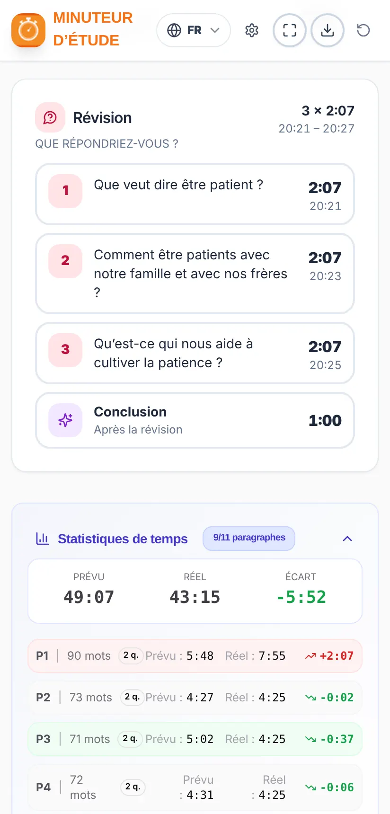

Mode d’emploi
Minuteur d’étude
Préparer et conduire l’étude de La Tour de Garde dans les temps
Préparer et conduire l’étude de La Tour de Garde dans les temps
Le Minuteur d’étude aide le frère qui conduit l’étude de La Tour de Garde à bien répartir le temps et à finir à l’heure.
Tu charges l’article de la semaine en PDF et l’application :
Application non officielle. C’est un projet gratuit et indépendant. Ce n’est pas une publication officielle et elle n’a aucun lien avec jw.org ni avec l’organisation des Témoins de Jéhovah. L’article est analysé sur ton propre appareil : il n’est ni envoyé ni enregistré sur un serveur.
Les images de ce mode d’emploi utilisent un article d’exemple inventé, pas un véritable article de La Tour de Garde.
Installe-la depuis Google Play : cherche « Temporizador de Estudio » ou ouvre ce lien :
play.google.com/store/apps/details?id=com.comangelo.temporizadorestudio
Elle n’est pas encore sur l’App Store, mais elle fonctionne de la même façon sur le web et peut être ajoutée à l’écran d’accueil :
Ouvre temporizador-estudio.vercel.app dans le navigateur. Dans Chrome et Edge, tu peux l’installer comme application avec l’icône d’installation de la barre d’adresse.
Mises à jour : quand une nouvelle version est disponible, l’application affiche le message « Une nouvelle version de l’application est disponible. » avec le bouton Mettre à jour. Elle ne se met jamais à jour toute seule au milieu d’une étude.

De haut en bas, tu trouveras :
La carte « Article de cette semaine » affiche la semaine actuelle (par exemple, 9-15 novembre 2026) et le numéro de La Tour de Garde qui la contient. Avec les flèches ‹ ›, tu peux choisir une autre semaine.
La Tour de Garde est téléchargée dans la langue de l’application. Si l’application est en français, c’est l’édition française qui est téléchargée ; si elle est en anglais, l’édition anglaise, et ainsi de suite pour chaque langue. Pour télécharger une autre langue, change d’abord la langue de l’application (section 14). En portugais, c’est l’édition du Portugal ou celle du Brésil qui est téléchargée, selon ton choix.
L’application garde une copie de la revue. Les semaines suivantes du même numéro s’ouvrent directement avec « Ouvrir l’article de cette semaine », sans rien retélécharger. Les revues enregistrées s’effacent toutes seules 3 mois après leur dernière semaine.
Sur ordinateur, tu peux aussi glisser le PDF dans la zone du bas ou choisir le dossier où tu ranges les revues : l’application les trouvera toute seule.
Elle dit que la revue n’est pas encore publiée ? jw.org publie chaque numéro quelques semaines à l’avance. Si tu choisis une semaine très éloignée, elle n’est peut-être pas encore disponible.


Une fois l’article chargé, tu verras :
Sur la carte du plan, le message « Commentaires : X s par question » t’indique le temps moyen disponible pour répondre à chaque question.
Si l’article est trop long pour le temps choisi, l’alerte « Ça ne rentre pas » apparaît avec le temps manquant. Tu peux allonger la durée ou choisir une lecture plus rapide dans les Réglages.

Chaque paragraphe occupe une ligne avec son numéro, son temps prévu et l’heure approximative à laquelle il devrait se terminer. Les étiquettes de couleur signalent ce dont il faut tenir compte :
| Étiquette | Ce que ça veut dire |
|---|---|
| Jacques 5:7, 8 | Il y a un verset à lire. La référence exacte est affichée. |
| Image | La question renvoie à une image de l’article (« Voir aussi l’image »). |
| Note | Il y a une note en bas de page à commenter. |
| ★ Point clé | La question mentionne un encadré ou une idée mise en valeur entre guillemets. |
Touche un paragraphe pour l’ouvrir. Tu verras les mots, le temps de lecture, sa question et, s’il est long, le temps supplémentaire pour plus de commentaires. À partir de là :
Les paragraphes qui partagent une question (par exemple « 5, 6. ») sont traités comme un groupe, et le bouton Suivant saute tout le groupe.
Recommandé : pendant l’étude, ouvre le mode présentation (section 9). Cette section explique le fonctionnement général, qui est le même dans les deux affichages.
Sur le téléphone, les boutons principaux sont toujours en bas, dans la barre inférieure :


Sur la carte du plan, en haut, tu peux mettre en pause et reprendre l’étude. Le message « Doit se terminer dans m:ss » te rappelle combien de temps il reste jusqu’à l’heure de fin.
L’écran ne s’éteint pas pendant l’étude, pour que tu n’aies pas à toucher le téléphone. À la fin, le téléphone recommence à éteindre l’écran comme d’habitude.
La carte de la partie en cours (paragraphe, introduction, question de révision ou conclusion) change de couleur selon le temps écoulé :
| Couleur | Quand | Que faire |
|---|---|---|
| DANS LES TEMPS | Jusqu’au temps prévu. | Tout va bien : continue. |
| TOLÉRANCE | Le temps est dépassé, mais de 30 % au plus. | Commence à conclure les commentaires. |
| DÉPASSÉ | Plus de 30 % au-dessus du temps prévu. | Passe au paragraphe suivant. |


Dans les 5 dernières minutes de l’étude, les paragraphes et les questions de révision n’ont pas de tolérance : ils passent directement du vert au rouge, pour ne pas empiéter sur le temps de la fin. La conclusion garde toujours sa tolérance.
Si une partie s’allonge, pas de problème : quand tu touches Suivant, l’application répartit à nouveau le temps restant entre ce qui reste, pour finir à l’heure.
C’est la façon recommandée de conduire l’étude. Le mode présentation évite les distractions : il n’affiche que l’essentiel, les couleurs vert, jaune et rouge t’indiquent d’un coup d’œil où tu en es et comment tu te situes par rapport au temps, et les boutons Suivant et Commentaire sont grands, faciles à repérer et à toucher.
Conçu pour poser le téléphone ou la tablette sur le pupitre ou l’estrade : tout est grand et lisible d’un coup d’œil. Il s’ouvre avec le bouton ⛶ de la barre inférieure et se ferme avec ✕ (ou la touche Échap sur ordinateur).
En haut s’affichent l’heure actuelle, l’heure de fin et le temps restant, avec une barre de progression. Au centre, la partie en cours avec son chronomètre et sa couleur, et les étiquettes (par exemple Lire Jacques 5:7, 8). En bas, les boutons Commentaire et Suivant.
Il y a trois dispositions. On les change avec le bouton de disposition ▦ (en haut à droite) ou dans Réglages → Affichage :


En mode présentation, le grand bouton avance tout seul dans l’étude : Commencer l’étude → Passer au paragraphe 1 → Paragraphe suivant → Question de révision → Aller à la conclusion → Terminer l’étude. Dans les 5 dernières minutes, une alerte rappelle qu’il faut terminer.
Exemple (l’article des images) : dans une étude de 60 minutes avec 11 paragraphes et 21 questions (18 pour les paragraphes et 3 pour la révision), avec un temps par réponse de 35 secondes, environ 7 minutes vont à la lecture, 2 minutes à l’introduction et à la conclusion, et environ 51 minutes aux commentaires, soit un peu plus de 2 minutes par question.
Touche ⚙ en haut à droite. Les réglages sont enregistrés sur ton appareil et répartis en quatre onglets :


| Onglet | Ce que tu peux changer |
|---|---|
| Temps | Durée de l’étude (jusqu’à 60 min). Durée de l’introduction et de la conclusion (de 30 s à 3 min). Visite du responsable de circonscription. |
| Lecture | Vitesse de lecture du lecteur : Lente (150), Normale (180) ou Rapide (210 mots/min). Temps par réponse (de 30 à 90 s ; il sert aussi pour chaque verset, image, note ou point clé). Paragraphes longs ou groupés : Sans extra, Normal ou Plus de commentaires. |
| Alertes | Son et vibration (avec des boutons pour les tester). Alerte paragraphe dépassé, alerte « Plus que 5 minutes » et jusqu’à deux alertes avant la révision. |
| Affichage | Langue, thème clair ou sombre (avec quatre variantes sombres) et la disposition du mode présentation. |
Si tu changes la vitesse de lecture ou le temps par réponse pendant l’étude, la modification s’appliquera à l’étude suivante.
Vérifie que le téléphone n’est pas en mode silencieux si tu veux entendre les alertes. La vibration fonctionne sur Android ; sur iPhone, cela dépend du navigateur.

La semaine de la visite, active l’interrupteur « Visite du responsable de circonscription » sur l’écran d’accueil (ou dans Réglages → Temps). L’étude dure alors 30 minutes et les paragraphes ne sont pas lus : les questions, les versets, les images et la révision restent. Pense à le désactiver après la visite.

L’application fonctionne en espagnol, anglais, allemand, italien, français, portugais, polonais, néerlandais et roumain. Change de langue avec le bouton du globe, en haut, ou dans Réglages → Affichage. Quand tu changes de langue :
Ce mode d’emploi est disponible dans toutes ces langues : utilise les boutons de langue en haut de la page.

Les Statistiques de temps comparent le temps prévu et le temps réel pour toute l’étude et pour chaque paragraphe, avec l’écart en vert (plus rapide) ou en rouge (plus lent) et les commentaires comptés. Elles t’aident à voir quelles parties se sont allongées et à ajuster la fois suivante (par exemple, la vitesse de lecture).
Avec le bouton exporter ⬇ de la barre supérieure, tu peux enregistrer le plan de l’étude en image (PNG) ou en PDF, pour l’imprimer ou le partager.
Pour préparer une autre étude, utilise le bouton recommencer ↻.